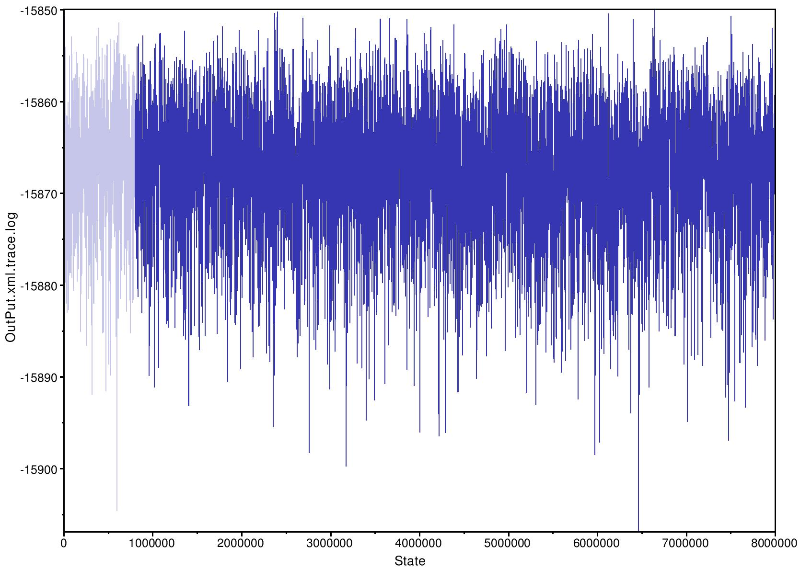

Network inference with SnappNet
SnappNet is a new Bayesian method that directly relies on DNA sequences.
Our method is implemented in BEAST 2 (Bouckaert et al., 2014)
, an improved version of the popular
version BEAST 1.x dedicated to Bayesian evolutionary analyses.
Our SnappNet package is built on two BEAST packages, Snapp (Bryant et al, 2012),
and SpeciesNetwork (Zhang et al., 2017).
It incorporates the novel MCMC operators of SpeciesNetwork to move through the network space,
and also benefits from operators specific to the mathematical model behind Snapp (e.g. population sizes,
mutation rates ...). We refer to our webpage on our simulator SimSnappNet , for informations regarding the stochastic model used in SnappNet.
Contrary to SimSnappNet, SnappNet imposes the constraint 2uv/(u+v)=1 .
About the 16 MCMC operators
Topological operator :
addReticulation : to add a reticulation node
deleteReticulation : to delete a reticulation node
flipReticulation : to flip a reticulation edge
relocateBranch : to relocate a branch
relocateBranchNarrow :
Other operators :
ChangeUAndV: to change the mutation rate values u
(from red to green) and v (from green to red), under the constraint 2uv/(u+v)=1.
ChangeGamma: to change the coalescence rate Gamma associated to a network branch. By definition, in the model, Gamma=2/Theta, where
Theta denotes the population size
ChangeAllGamma: to change coalescence rates Gamma of all network branches.
TurnOverScale: to change the value of the parameter nu/lambda linked the birth-hybridization process
(nu: hybridization rate, lambda: speciation rate)
divrRateScale: to change the value of the parameter
lambda-nu linked to the birth-hybridization process
gammaProbUniform: to change the hybridization probability at a reticulation node chosen at random
(among all reticulation nodes)
gammaProbRndWalk: to change the value of the hybridization probability (at a random reticulation node) by applying
a random walk to the logit of gamma
originMultiplier: to change origin height of the network
networkMultiplier: to change internal node heights using a multiplier
NodeUniform: to select randomly an internal network node and to move its height uniformly
NodeSlider: to select randomly an internal network node and to move its height using a sliding window
Operators in the Xml File
"weight" refers to the weight of the operator, it will be scaled by the total weights (over all operators).
At each MCMC step, an operator is chosen randomly according to the rescaled weights.
< operator id='divrRateScale:species' spec='ScaleOperator' parameter='@netDivRate:species' scaleFactor='0.5' weight='10.0' >
< operator id='turnOverScale:species' spec='ScaleOperator' parameter='@turnOverRate:species' scaleFactor='0.5' weight='10.0' >
< operator id='gammaProbUniform:species' spec='speciesnetwork.operators.GammaProbUniform' speciesNetwork='@network:species' weight='10.0' >
< operator id='gammaProbRndWalk:species' spec='speciesnetwork.operators.GammaProbRndWalk' speciesNetwork='@network:species' weight='10.0' >
< operator id='originMultiplier:species' spec='speciesnetwork.operators.OriginMultiplier' speciesNetwork='@network:species' origin='@originTime:species' weight='0.0' >
< operator id='addReticulation:species' spec='speciesnetwork.operators.AddReticulationGH' speciesNetwork='@network:species' weight='10.0' coalescenceRate='@coalescenceRate' >
< operator id='deleteReticulation:species' spec='speciesnetwork.operators.DeleteReticulationGH' speciesNetwork='@network:species' weight='10.0' coalescenceRate='@coalescenceRate' >
< operator id='networkMultiplier:species' spec='speciesnetwork.operators.MyNetworkMultiplierWithoutGeneTrees' speciesNetwork='@network:species' origin='@originTime:species' weight='5.0' >
< operator id='flipReticulation:species' spec='speciesnetwork.operators.FlipReticulation' speciesNetwork='@network:species' weight='10.0' >
< operator id='relocateBranch:species' spec='speciesnetwork.operators.RelocateBranch' speciesNetwork='@network:species' weight='30.0' >
< operator id='nodeSlider:species' spec='speciesnetwork.operators.NodeSlider' speciesNetwork='@network:species' origin='@originTime:species' isNormal='true' sigma='0.005' weight='10.0' >
< operator id='NodeUniform:species' spec='speciesnetwork.operators.NodeUniform' speciesNetwork='@network:species' weight='10.0' >
< operator id='relocateBranchNarrow:species' spec='speciesnetwork.operators.RelocateBranchNarrow' speciesNetwork='@network:species' weight='10.0' >
< operator id='ChangeUAndV' spec='snapp.operators.MutationMover' u='@u' v='@v' window='0.1' weight='0' >
< operator id='ChangeGamma' spec='snapp.operators.GammaMoverGH' scale='0.5' weight='10' coalescenceRate='@coalescenceRate' >
< operator id='ChangeAllGamma' spec='snapp.operators.GammaMoveAllGH' scale='0.5' weight='10' coalescenceRate='@coalescenceRate' >
About priors in the Xml File
< distribution id='prior' spec='util.CompoundDistribution' >
< distribution id='networkPrior' spec='speciesnetwork.BirthHybridizationModel' network=
'@network:species'
netDiversification=
'@netDivRate:species' turnOver=
'@turnOverRate:species' betaShape='1.0'/>
< prior id='networkOrigin' name='distribution' x='@originTime:species'>
< Exponential id='exponential.0' name='distr' mean='0.1'/>
< /prior >
< prior id='netDivPrior' name='distribution' x='@netDivRate:species'>
< Exponential id='exponential.01' name='distr' mean='10.0'/>
< /prior >
< prior id='turnOverPrior' name='distribution' x='@turnOverRate:species'>
< Beta id='betadistr.01' name='distr' alpha='1.0' beta='1.0'/>
</prior >
< distribution spec='snaplikelihood.SnAPPriorGH' name='distribution' id='snapprior' kappa=
'@kappa'
alpha=
'@alpha' beta=
'@beta' coalescenceRate=
'@coalescenceRate' />
< /distribution >
As a network prior, we used the birth hybridization process of Zhang et al. (MBE, 2017). The network prior depends on the speciation rate lambda,
on the hybridization rate nu and on the time of origin Tau0. Hyperpriors are imposed onto these parameters.
In particular, an exponential distribution is used for the hyperparameters
d:=lambda-nu and Tau0.
The hyperparameter
r:=nu/lambda is assigned a Beta distribution.
As its cousin Snapp, SnappNet considers a Gamma distribution as a prior on
population sizes Theta. This Gamma prior induces a prior on the colaescence rate
About the network initialization in the Xml File
SnappNet require a species tree in newick format as input.
SnappNet will first parse the species tree, and then transform it into a network. On teh example below, we consider a 4 species tree (R, A, B and C).
<init spec='beast.util.TreeParser' id=
'newick:species' IsLabelledNewick='true' adjustTipHeights='false'
newick='(((R:0.05,A:0.05):0.05,((C:0.05,D:0.05):0.025,B:0.075):0.025):0)'/>
< init id='SNI' spec='speciesnetwork.MySpeciesNetworkInitializerWithoutEmbedding' estimate='false'
method='random' speciesNetwork=
'@network:species' origin=
'@originTime:species' >
</init >
The link between network:species and newick:species is done using statenode
< stateNode id=
'network:species' spec='speciesnetwork.NetworkParser' tree=
'@newick:species' >
< /stateNode >
About parameters in the Xml File
< parameter id='originTime:species' lower='0.0' name='stateNode' > 0.1 < /parameter >
Be careful, originTime:species is a scaling factor. If you do not want to scale anything it has to be set to the same value as origin (i.e. the height) of the network
Starting value for the parameter lambda-nu of the birth-hybridization process
< parameter id='netDivRate:species' lower='0.0' name='stateNode'> 2.0 < /parameter >
Starting value for the parameter nu/lambda of the birth-hybridization process
< parameter id='turnOverRate:species' lower='0.0' upper='1.0' name='stateNode' > 0.5 </parameter >
During the MCMC, these values will change as soon as the operators divrRateScale and TurnOverScale have weights different from 0.
Starting values for the mutation rate parameters u (from red to green) and v (from green to red)
< parameter id='u' lower='0.0' upper='1.0' name='stateNode'> 1.0 </parameter >
< parameter id='v' lower='0.0' upper='1.0' name='stateNode'> 1.0 </parameter >
If the weight of the operator ChangeUAndV is equal to 0, SnapNet will run with these starting values during all the MCMC.
Note that when u=1 and v=1, we have 2uv/(u+v)=1 (so these starting values satisfy the constraint).
Starting value for the coalescence Rate
< parameter id=
'coalescenceRate' lower='0.0' upper='1.0' name='stateNode'> 400 </parameter >
If the weight of the operators ChangeGamma or ChangeAllGamma are different from 0, the coalescence rate will change during the MCMC steps.
Values for the parameters alpha and beta of the Gamma prior on population sizes
< parameter id=
'alpha' lower='0.0' name='stateNode'> 1.0 </parameter >
< parameter id=
'beta' lower='0.0' name='stateNode'> 200.0 </parameter >
There is a link between the coalescence rate, and the Gamma prior on population sizes Theta (cf. Snapp code, or our SnappNet preprint).
Indeed, this Gamma prior induces a prior on the colaescence rate
< parameter id=
'kappa' lower='0.0' name='stateNode'> 34.6574 </parameter >
In the current version, the parameter kappa is not handled by SnappNet. You can set this parameter to any value.
In Snapp code, David Bryant used this parameter when the user did not want to use Gamma prior (
CIR process, Cox Ingersoll and Ross 1985, Econometrica).
About the posterior computation in the Xml File
The logarithm of the posterior is computed thanks to the following command lines.
It is the sum of the log prior and the log likelihood.
Note that it does not compute the normalization constant since it cancels out when computing ratios in the MCMC.
< distribution id='posterior' spec='util.CompoundDistribution' >
< distribution id='prior' spec='util.CompoundDistribution' >
...... cf. the section on priors
< /distribution >
< distribution id='likelihood' spec='speciesnetwork.SnAPTreeLikelihoodGH' data='@snapalignment' speciesNetwork='@network:species' mutationRateU=
'@u' mutationRateV=
'@v' coalescenceRate=
'@coalescenceRate'>
< /distribution >
< /distribution >
The likelihood is computed according to our new algorithm described in the SnappNet preprint. 4 steps are described below, on a network with 3 species (A, B and C).
Recall that it computes the likelihood of the data located at the leaves below the (most recent) purple line, given the parameter values at the purple line.
Markov Chain length in the Xml File
You can specify the length of your markov chain here
< run id='mcmc' spec='MCMC' chainLength='8000000' storeEvery='1000' >
Specifying outputs in the xml file
It will generate two files, named OutPut.xml.trace.log and OutPut.xml.species.networks.
OutPut.xml.trace.log gives the log posterior, the log likelihood, the log prior, and a few parameter values ... at some MCMC steps (depending on the logEvery parameter)
OutPut.xml.trace.log can be analyzed with the software
Tracer for some MCMC convergence diagnostics (ESS ...)
OutPut.xml.species.networks gives the networks sampled by the MCMC algorithm.
< logger id='tracelog' fileName='OutPut.xml.trace.log' logEvery='1000' model='@posterior' sort='smart'>
< log idref='posterior'/>
< log idref='likelihood'/>
< log idref='prior'/>
< log idref='netDivRate:species'/>
< log idref='turnOverRate:species'/>
< log idref='originTime:species'/>
< log id='height:species' speciesNetwork='@network:species' spec='speciesnetwork.NetworkStatLogger'/>
< log idref='u'/>
< log idref='v'/>
< /logger >
The file OutPut.xml.trace.log will look like this ...
Sample posterior likelihood prior netDivRate:species turnOverRate:species originTime:species network:species.height network:species.length u v
0 -20956.14954243043 -20840.948358026966 -115.20118440346411 2.0 0.5 0.1 0.1 0.375 1.0 1.0
1000 -18500.83111922361 -18352.38628265643 -148.44483656718123 1.7987135434462311 0.9181762602687488 0.07400854142735232 0.07080470943227002 0.2230355170821629 1.0 1.0
2000 -18464.85564360678 -18276.372075560637 -188.48356804614372 12.778256969343165 0.8123931956935018 0.07334688998602774 0.07103265639852284 0.21626447931434026 1.0 1.0
As said before, the OutPut.xml.trace.log file can be analyzed with
Tracer to check the MCMC convergence.

< logger id='specieslog' fileName='OutPut.xml.species.networks' logEvery='1000' mode='tree'>
<log id='networkLogger:species' spec='speciesnetwork.NetworkWithMetaDataLoggerGH' speciesNetwork='@network:species' coalescenceRate='@coalescenceRate'/>
</logger >
The file OutPut.xml.species.networks, on a 4 species network (R, A, B, C), will look like this (see below). Note that &Theta refers to the population size (for each branch), and it is equal to 2/Gamma, where
Gamma refers to the coalescence rate on that branch. Recall that branch lengths are in substitutions per site (i.e. genetic distance).
Begin trees;
tree STATE_0 = (((R[&Theta=0.005]:0.05,A[&Theta=0.005]:0.05)[&Theta=0.005]:0.05,((C[&Theta=0.005]:0.05,D[&Theta=0.005]:0.05)[&Theta=0.005]:0.02500000000000001,B[&Theta=0.005]:0.07500000000000001)[&Theta=0.005]:0.024999999999999994)[&Theta=0.005]:0.0);
tree STATE_1000 = ((R[&Theta=0.005947456651118153]:0.07080470943227002,(((B[&Theta=0.010029034645707471]:0.007745677351344019,(C[&Theta=0.01851053238761296]:0.0016005528501038264,D[&Theta=0.010124776378504487]:0.0016005528501038264)
S5[&Theta=0.01784858093528644]:0.006145124501240193)[&Theta=0.012943790011121026]:0.0026538835685392045)#H1[&Theta=0.0030579477165035454,gamma=0.36660153985935845]
:0.05326928044835476,(#H1[&Theta=0.00774444768220411]:0.008411026647937057,A[&Theta=0.016435616222157615]:0.01881058756782028)[&Theta=0.011270865817516337]:0.044858253800417705)[&Theta=0.009214217327898634]:0.007135868064032033)[&Theta=0.012120578660510327]:0.0032038319950822985);
A screen logger which gives feedback on screen ....
< logger id='screenlog' logEvery='1000' model='@posterior'>
<log idref='posterior'/>
<log id='ESS.0' spec='util.ESS' arg='@posterior'/>
<log idref='likelihood'/>
<log idref='prior'/>
</logger >
How to run SnappNet
java -jar SnappNetForSimSnappNet.jar -seed 4 myXmlFile.xml > stdout